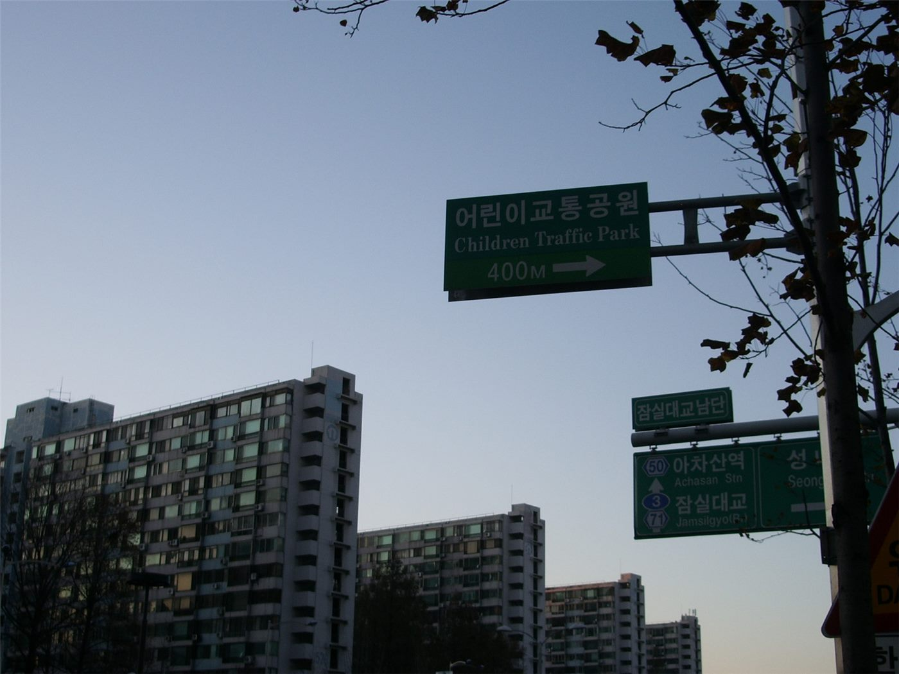

"묻지도 않고 짓겠다니"… 염창동 1000가구 공급 설명회 무산
서울 강서구 염창동에서 열릴 예정이던 공공주택 설명회가 주민 반발로 열리지 못했다. 공급 물량 자체보다 '사전 협의 없음'이 쟁점으로 떠올랐다.
조계현 기자 · 2026.09.12
橋한국

서울 강서구 염창동에 1000가구 규모 공공주택을 공급하는 계획을 설명하기 위해 마련된 주민설명회가 11일 주민들의 반발로 열리지 못했다. 주최 측은 일정을 다시 잡기로 했다.
광고 문의 · 300×250주민들이 내세운 문제는 물량보다 절차였다. 대상지 선정과 규모 결정이 이뤄진 뒤에야 설명회가 열린 점, 그 전까지 인근 주민에게 사전 의견을 묻는 과정이 없었던 점을 문제 삼았다.
공공주택 공급은 전국적으로 속도가 관건인 사업이다. 부지 확보와 인허가에 걸리는 시간을 줄이기 위해 행정 절차를 앞당기는 방식이 쓰이는데, 그만큼 주민 설명이 뒤로 밀리는 구조가 반복돼 왔다.
인근 학교 수용 여력과 교통량, 주차 문제도 함께 제기됐다. 대규모 공급이 이뤄질 경우 기존 기반시설이 감당할 수 있는지에 대한 검토 자료를 공개하라는 요구가 나왔다.
서울시와 구청은 설명회를 다시 열어 계획을 공유하겠다는 입장이다. 다만 사업 자체를 재검토할 계획은 없다고 선을 그었다.
주택 공급 확대와 지역 수용성 사이의 충돌은 최근 수도권 여러 지역에서 비슷한 형태로 반복되고 있다. 공급 목표와 절차 설계를 함께 다루지 않으면 일정만 늦어진다는 지적이 나온다.
출처·참고 (사실 확인용 — 본문은 직접 재작성)
· 경향신문 2026-09-11
· 경향신문 2026-09-11